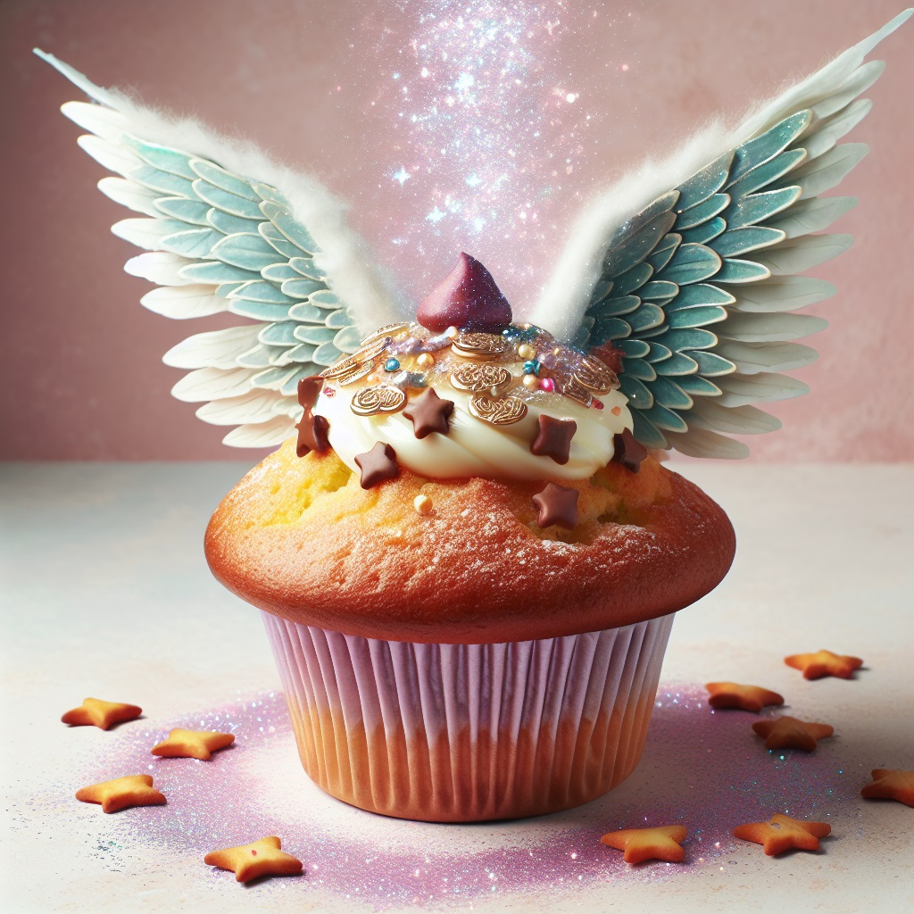
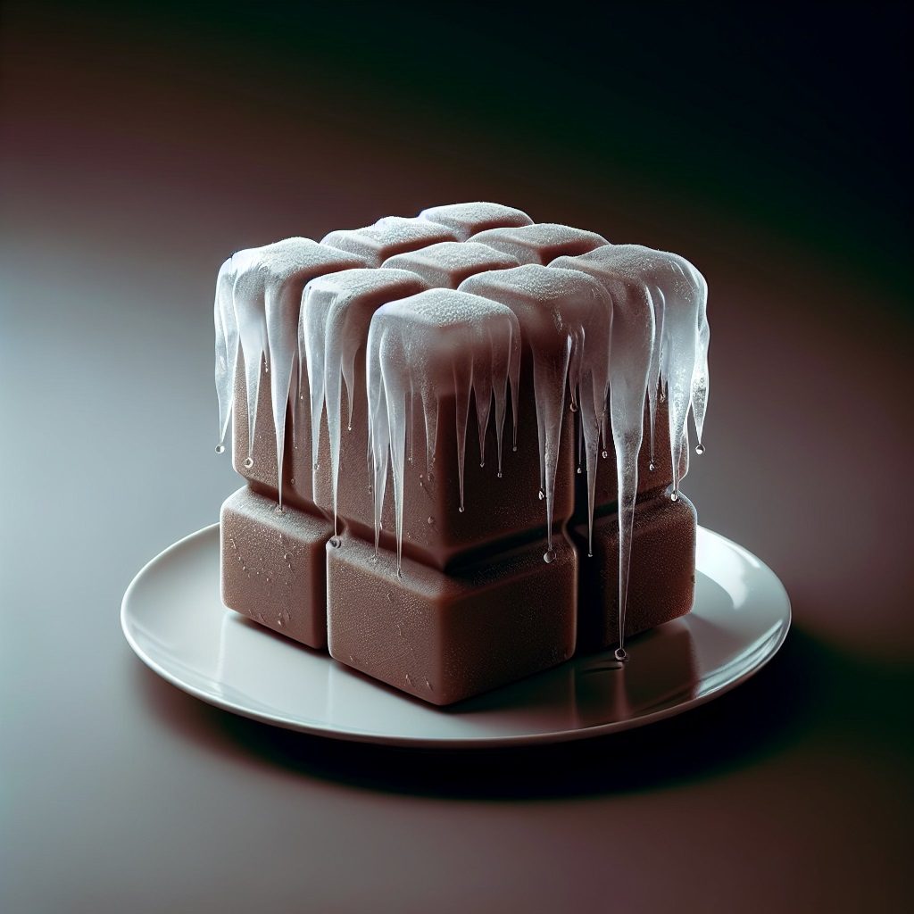
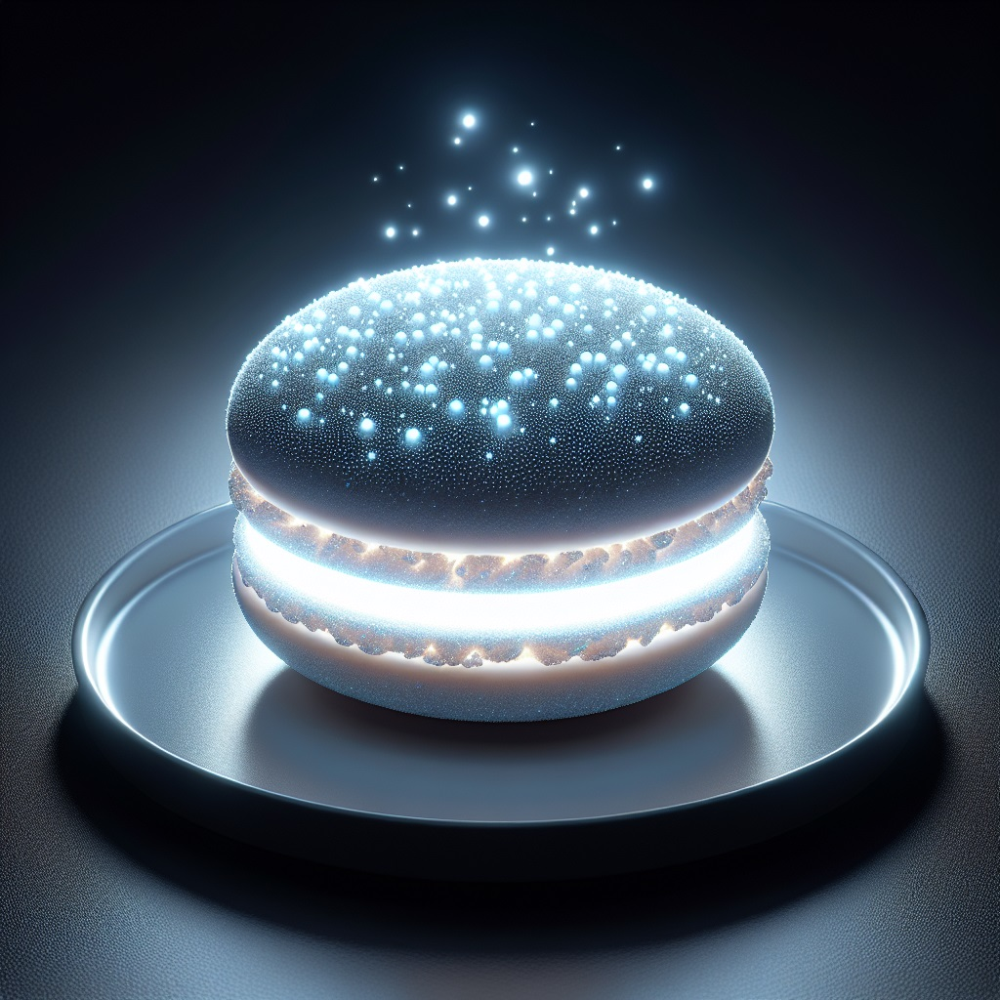
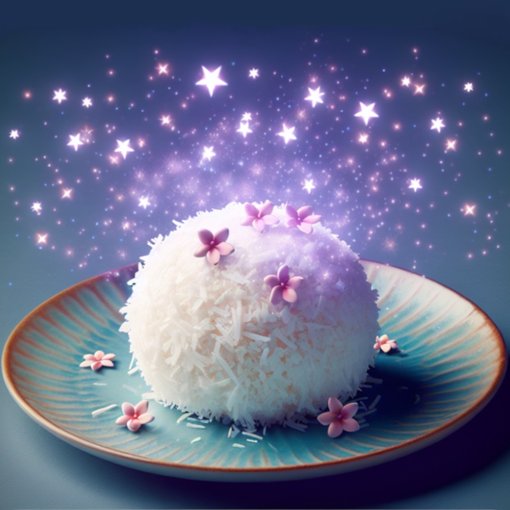

Receptek

Reptető muffin
A reptető muffin egy mágikus sütemény, amely elfogyasztóját rövid időre szárnyakkal ruházza fel, így az bárhova elrepülhet. Fogyasztása körültekintéssel ajánlott, mert nagy mennyiségben mérgező. A repülést érdemes alacsonyan végezni, mert nem a világ legjobb érzése több emelet magasról a kemény betonra pottyanni.

Jég mignon
Ha elege van, hogy állandóan melege van este, akkor a jég mignont önnek találták ki! Nincs szükség áramforrásra, és a körülötte lévőket úgy lehűti, akár csak egy klíma! Ön már evett klímát? Ugye, hogy milyen rossz íze van? Ellenben a jég mignon a világ egyik legfinomabb édessége.

Csillagfürt macaron
Ki mondta, hogy egy édesség csak arra lehet jó, hogy megegyük? És mi van ha a nagymamának visszük az éjszaka közepén az erdőben? Hogy fogunk látni, hogy ne a farkas karjai közé sétáljunk? A csillagfürt macaron nem csak finom, de a sötétben világít, így ezentúl már a farkastól sem kell félnünk.

Álom kókuszgolyó
Az álom kókuszgolyó elfogyasztása után azonnal álomba szenderülünk. Egy fárasztó nap után tökéletes édesség lehet, és a nyugodt éjszakánk is biztosítva van általa. Bár ez a mondat furán hangzik, de éjszaka olyan álom vár ránk, amiről mindig is álmodtunk.